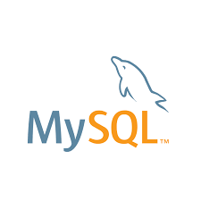
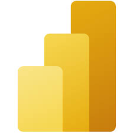

Tools Covered





This program aims to equip final-year students with essential skills in Data Analytics and Business Intelligence, enabling them to analyze, interpret, and present data effectively. Through hands-on training in Python, MySQL, Advanced Excel, and Power BI, students will learn data cleaning, transformation, visualization, and storytelling. By completing real-world projects, they will gain the technical and analytical expertise needed to excel in roles such as Data Analyst or Business Intelligence Specialist in a data-driven industry.
This module introduces data analytics concepts and Python as a tool for data manipulation and analysis.
Learn how to work with MySQL to store, query, and manage data.
This module focuses on Excel techniques commonly used in industry.
Master Power BI for interactive data visualizations and dashboards.
| Category | Skills Mastered |
|---|---|
| Technical Skills | Python, SQL, Power BI, Advanced Excel, ETL, Automation with VBA and Python |
| Analytical Skills | EDA, Statistical Analysis, Problem-Solving with Data, Storytelling with Data |
| Business Intelligence | Dashboard Design, DAX, Data Visualization, Data-Driven Decision Making |
| Soft Skills | Collaboration, Project Management, Communication of Insights |
Upon successful completion, you'll earn certifications to validate your skills!
Showcase your Digital Forensics Fundamentals skills with this industry-recognized certificate.